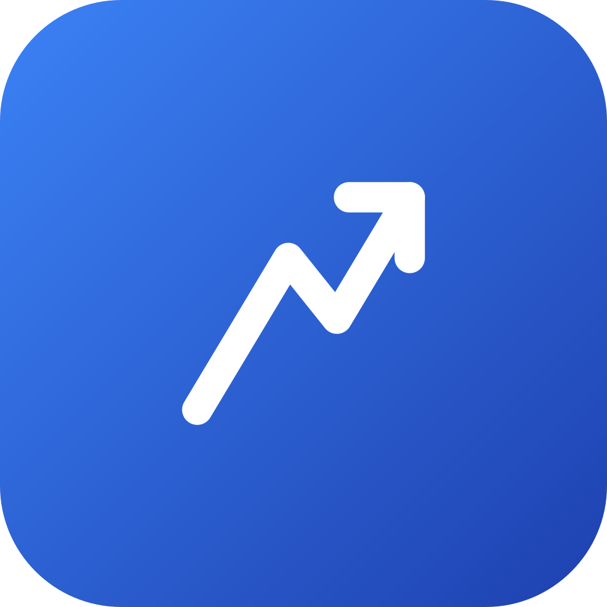
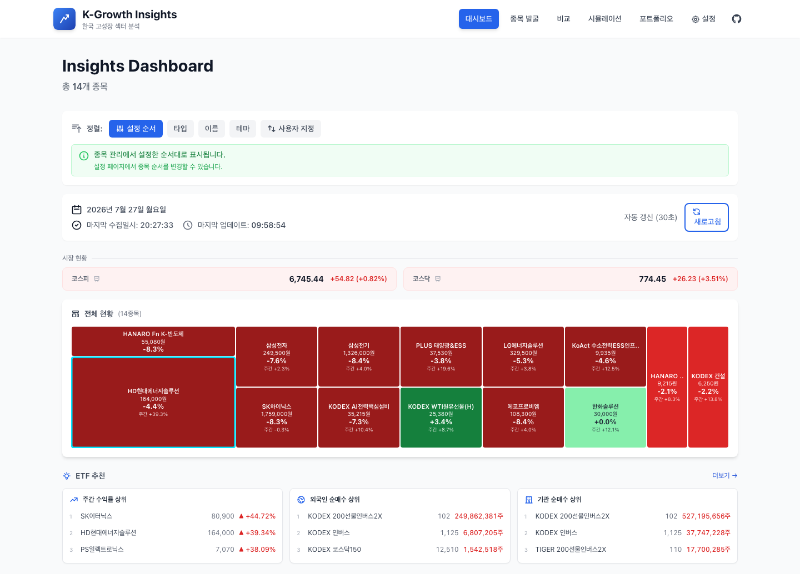
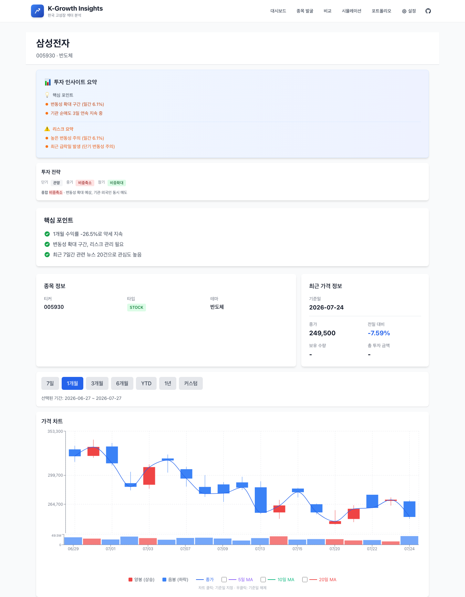
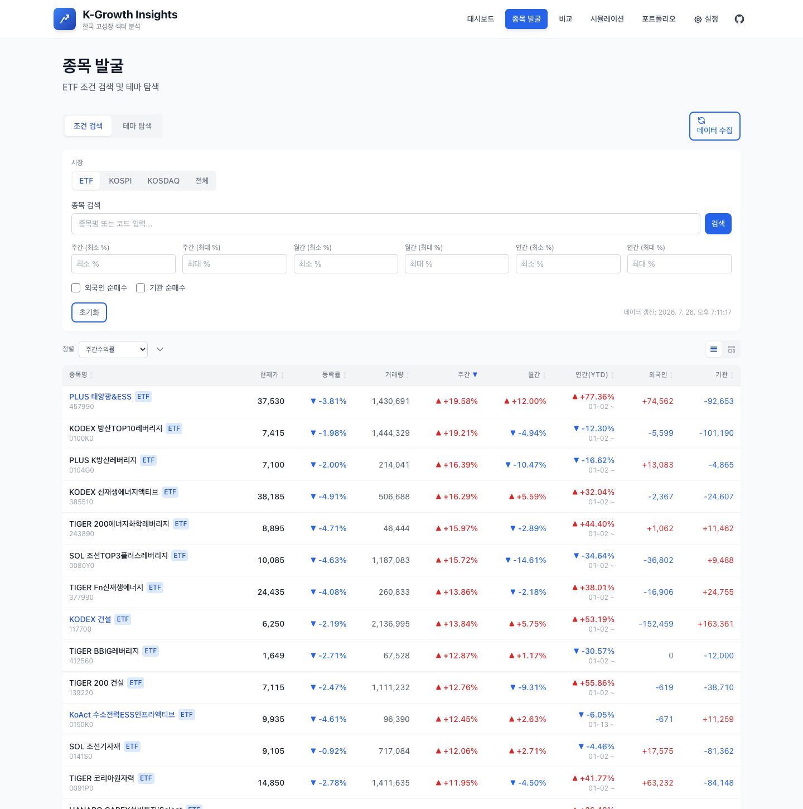

한국 고성장 섹터 ETF·주식 분석 앱. 네이버 모바일 API에서 시세·매매동향·펀더멘털을 모아 발굴부터 비교, 시뮬레이션, 포트폴리오 관리까지 한 화면에서 처리합니다.
화면
아래는 실제 앱 화면입니다. 종목·수치는 수집 시점의 데이터입니다.



기능
모든 지표는 백엔드에서 계산해 내려줍니다. 같은 이름의 지표가 화면마다 다른 값을 내지 않습니다.
시장 현황, 보유·관찰 종목 히트맵, 주간 수익률·순매수 상위 추천 카드.
인사이트 요약·투자 전략·리스크, 캔들+거래량, 투자자별 매매동향, RSI·MACD, 분봉, 뉴스, 펀더멘털.
카탈로그 전체 대상 조건 검색(수익률·순매수·섹터), 테마 탐색, 추천 프리셋.
정규화 가격 추이, 위험–수익 산점도, 상관관계 히트맵, 성과 비교표.
일시 투자·적립식(DCA)·포트폴리오 배분 — “그때 샀다면?”을 과거 데이터로 되짚습니다.
투자금·평가액·손익, 비중, 수익률 추이, 종목별 기여도, 분석 리포트.
종목 추가·수정·삭제·순서 변경, 네이버 검색 API 키, 데이터 수집·초기화, 테마.
데이터
데스크톱 HTML을 파싱하지 않습니다. JSON이라 마크업 변경에 견고하고,
개인 순매수도 개인 = -(기관+외국인) 근사가 아니라 실제값을 받습니다.
| 데이터 | 엔드포인트 |
|---|---|
| 일별 시세(OHLCV) | m.stock.naver.com/api/stock/{code}/price |
| 매매동향(외국인·기관·개인) | m.stock.naver.com/api/stock/{code}/trend |
| 분봉 | api.stock.naver.com/chart/domestic/item/{code}/minute |
| 종목명·유형 | m.stock.naver.com/api/stock/{code}/basic |
| 펀더멘털(PER·PBR·NAV) | m.stock.naver.com/api/stock/{code}/integration |
| ETF 구성종목 | m.stock.naver.com/api/stock/{code}/etfAnalysis |
| 시총 상위 카탈로그 | m.stock.naver.com/api/stocks/marketValue/{market} |
| 뉴스 | openapi.naver.com/v1/search/news.json (API 키 필요) |
모든 데이터는 로컬 SQLite 파일 하나에 저장됩니다. 외부로 전송하는 서버가 없고, 계정 가입도 없습니다. 뉴스 기능만 네이버 검색 API 키가 필요하며, 키가 없어도 나머지는 모두 동작합니다.
설치
릴리스 페이지에서 Apple Silicon은 -arm64.dmg, Intel Mac은 접미사 없는 .dmg를 받습니다.
uv를 설치해야 합니다
dmg에는 파이썬 환경이 들어있지 않습니다. 앱이 처음 실행될 때 uv로 백엔드 가상환경을 만듭니다.
curl -LsSf https://astral.sh/uv/install.sh | sh
Apple Developer 인증서로 서명·공증된 릴리스가 아니라면 처음 열 때 Gatekeeper 경고가 뜹니다. 시스템 설정 → 개인정보 보호 및 보안에서 “확인 없이 열기”를 눌러 실행합니다. 각 릴리스 노트에 서명 여부가 표시됩니다.
개발
백엔드는 uv, 프론트엔드는 npm. 명령은 just로 묶여 있습니다.
# 의존성 설치 + .env 생성, SQLite 초기화 just setup just db # 터미널 2개 just backend # :8000 just frontend # :5173 # 네이버 모바일 API로 전체 수집 just collect
# pytest + vitest just test # 프론트엔드 프로덕션 빌드 just build # dmg 생성 (arm64 + x64) npm --prefix desktop run build # 서명 + 공증 (자격증명 필요) npm --prefix desktop run build:release